EXPLORAR. Capturas a tamaño de móvil y las listas completas, con su puesto, para revisar.
Free Tour por Roma: 978 «me gusta» de partida (sale el primero).
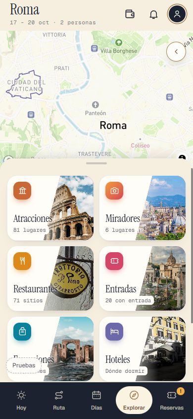
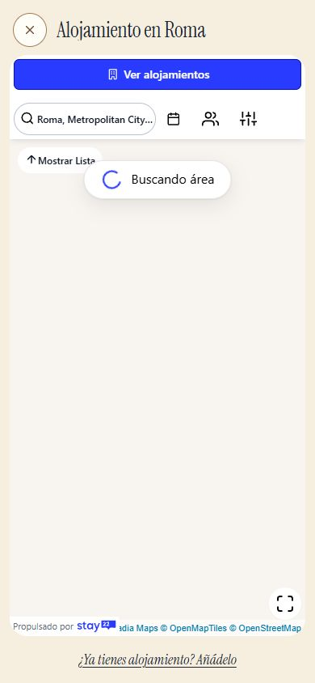
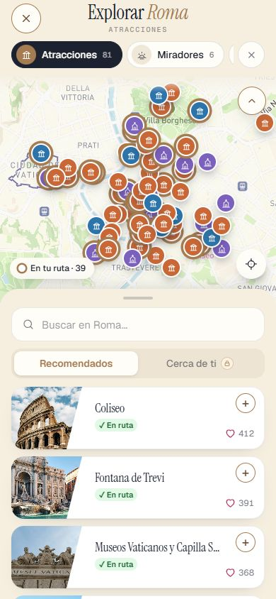
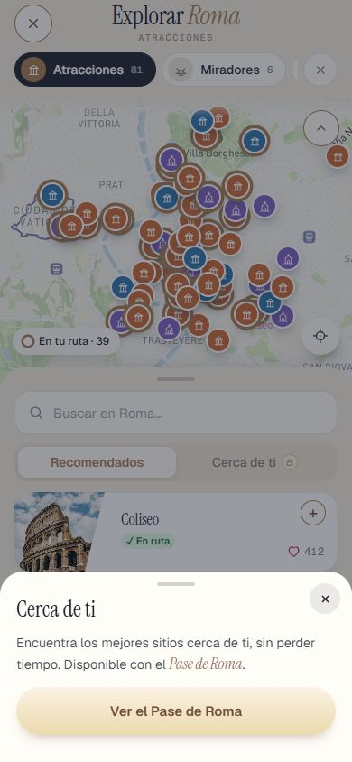
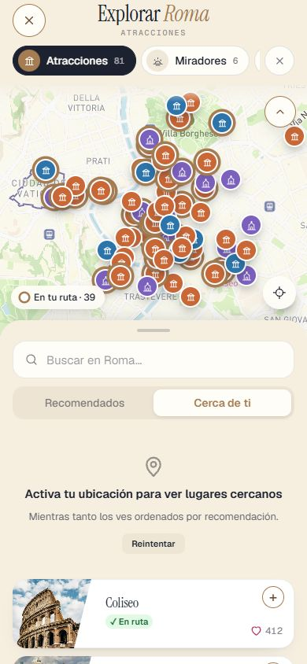
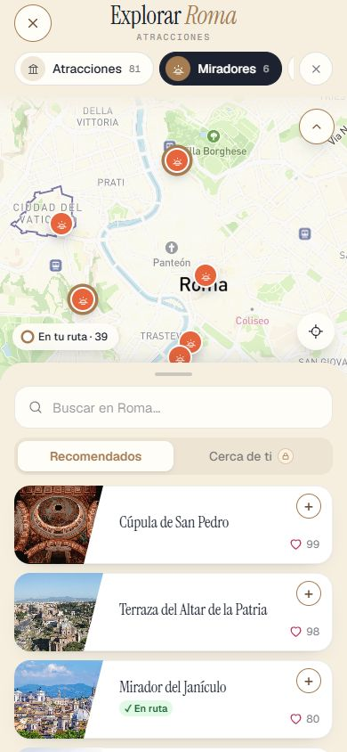
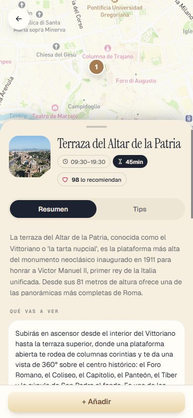
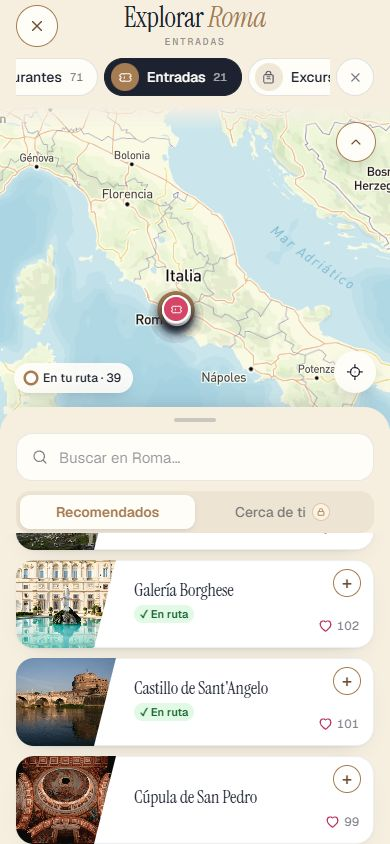
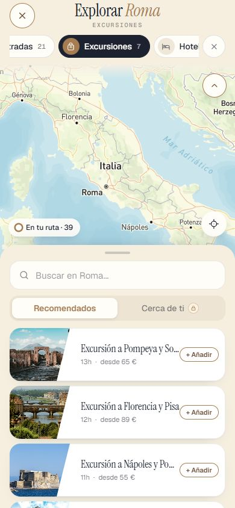
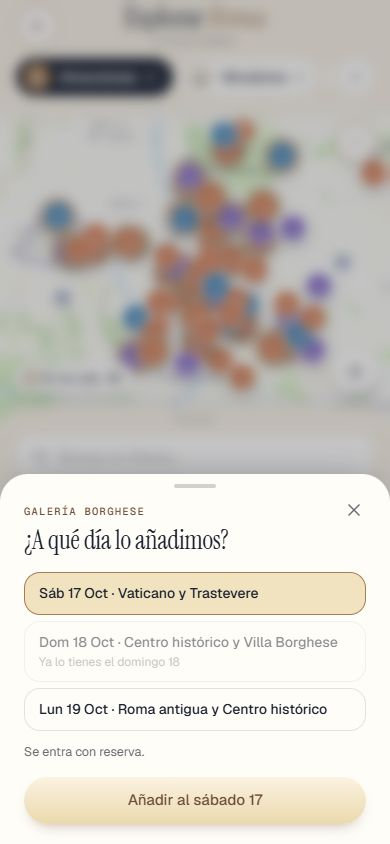
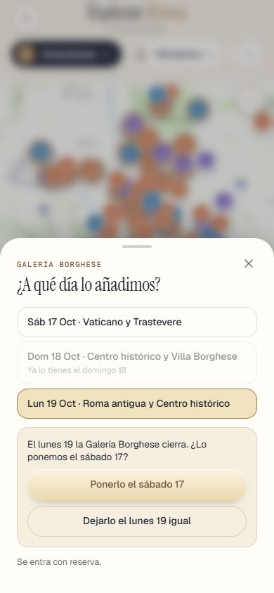
| Puesto | Me gusta | Sitio |
|---|---|---|
| 1 | 412 | Coliseo |
| 2 | 391 | Fontana de Trevi |
| 3 | 368 | Museos Vaticanos y Capilla Sixtina |
| 4 | 347 | Basílica de San Pedro |
| 5 | 326 | Panteón |
| 6 | 305 | Plaza de España |
| 7 | 199 | Piazza Navona |
| 8 | 184 | Foro Romano y Palatino |
| 9 | 169 | Plaza de San Pedro |
| 10 | 154 | Altar de la Patria |
| 11 | 139 | Arco de Constantino |
| 12 | 102 | Galería Borghese |
| 13 | 101 | Castillo de Sant'Angelo |
| 14 | 100 | Trastevere |
| 15 | 97 | Plaza Venecia |
| 16 | 96 | Puente Sant'Angelo |
| 17 | 95 | Via dei Fori Imperiali |
| 18 | 94 | Via della Conciliazione |
| 19 | 93 | Museos Capitolinos |
| 20 | 92 | Plaza del Campidoglio |
| 21 | 91 | Boca de la Verdad |
| 22 | 90 | Via Appia Antica |
| 23 | 89 | Basílica de San Juan de Letrán |
| 24 | 88 | Basílica de Santa María la Mayor |
| 25 | 87 | Termas de Caracalla |
| 26 | 86 | Teatro de Marcelo |
| 27 | 85 | Circo Máximo |
| 28 | 84 | Campo de' Fiori |
| 29 | 83 | Via Condotti |
| 30 | 82 | Isla Tiberina |
| 31 | 81 | Parque de Villa Borghese |
| 32 | 77 | Barrio Judío |
| 33 | 76 | Cripta de los Capuchinos |
| 34 | 74 | Basílica de San Clemente |
| 35 | 73 | Domus Aurea |
| 36 | 71 | Piazza del Popolo |
| 37 | 70 | Trinità dei Monti |
| 38 | 69 | Iglesia de San Pietro in Vincoli |
| 39 | 67 | Ara Pacis |
| 40 | 66 | Iglesia de Santa Maria in Trastevere |
| 41 | 65 | Santa Maria del Popolo |
| 42 | 63 | Iglesia de San Luigi dei Francesi |
| 43 | 62 | Iglesia del Gesù |
| 44 | 60 | Mercados de Trajano |
| 45 | 59 | Monti |
| 46 | 58 | Testaccio |
| 47 | 56 | Largo di Torre Argentina |
| 48 | 55 | Villa Farnesina |
| 49 | 52 | San Pietro in Montorio y Tempietto de Bramante |
| 50 | 0 | 100 Presepi in Vaticano |
| 51 | 0 | Basílica de Santa Cecilia in Trastevere |
| 52 | 0 | Bioparque de Roma |
| 53 | 0 | Borgo Pio |
| 54 | 0 | Catacumbas de San Calixto |
| 55 | 0 | Cementerio Protestante |
| 56 | 0 | Colle Oppio |
| 57 | 0 | Columna de Trajano |
| 58 | 0 | Elefantino de Bernini |
| 59 | 0 | Fuente de las Tortugas |
| 60 | 0 | Fuente del Tritón |
| 61 | 0 | Galería Nacional de Arte Moderno |
| 62 | 0 | Iglesia de San Ignacio de Loyola |
| 63 | 0 | Iglesia de Santa Maria della Vittoria |
| 64 | 0 | Iglesia de Santa Maria sopra Minerva |
| 65 | 0 | Mercado de Testaccio |
| 66 | 0 | Palazzo Doria Pamphilj |
| 67 | 0 | Piazza Colonna |
| 68 | 0 | Pirámide Cestia |
| 69 | 0 | Plaza Farnese |
| 70 | 0 | Plaza Trilussa |
| 71 | 0 | Ponte Sisto |
| 72 | 0 | Templo de Adriano |
| 73 | 0 | Via del Corso |
| 74 | 0 | Plaza del Quirinal (al final) |
| 75 | 0 | Quartiere Coppedè (al final) |
| 76 | 0 | Santo Bambino de Aracoeli (al final) |
| 77 | 0 | Via dei Coronari (al final) |
| 78 | 0 | Via del Babuino (al final) |
| 79 | 0 | Via di Ripetta (al final) |
| 80 | 0 | Via Margutta (al final) |
| 81 | 0 | Via Veneto (al final) |
| Puesto | Me gusta | Sitio |
|---|---|---|
| 1 | 99 | Cúpula de San Pedro |
| 2 | 98 | Terraza del Altar de la Patria |
| 3 | 80 | Mirador del Janículo |
| 4 | 78 | Terraza del Pincio |
| 5 | 53 | Jardín de los Naranjos |
| 6 | 0 | Ojo de la Cerradura del Aventino |
| Puesto | Me gusta | Sitio |
|---|---|---|
| 1 | 412 | Coliseo |
| 2 | 391 | Fontana de Trevi |
| 3 | 368 | Museos Vaticanos y Capilla Sixtina |
| 4 | 347 | Basílica de San Pedro |
| 5 | 326 | Panteón |
| 6 | 305 | Plaza de España |
| 7 | 199 | Piazza Navona |
| 8 | 184 | Foro Romano y Palatino |
| 9 | 169 | Plaza de San Pedro |
| 10 | 154 | Altar de la Patria |
| 11 | 139 | Arco de Constantino |
| 12 | 102 | Galería Borghese |
| 13 | 101 | Castillo de Sant'Angelo |
| 14 | 100 | Trastevere |
| 15 | 99 | Cúpula de San Pedro |
| 16 | 98 | Terraza del Altar de la Patria |
| 17 | 97 | Plaza Venecia |
| 18 | 96 | Puente Sant'Angelo |
| 19 | 95 | Via dei Fori Imperiali |
| 20 | 94 | Via della Conciliazione |
| 21 | 93 | Museos Capitolinos |
| 22 | 92 | Plaza del Campidoglio |
| 23 | 91 | Boca de la Verdad |
| 24 | 90 | Via Appia Antica |
| 25 | 89 | Basílica de San Juan de Letrán |
| 26 | 88 | Basílica de Santa María la Mayor |
| 27 | 87 | Termas de Caracalla |
| 28 | 86 | Teatro de Marcelo |
| 29 | 85 | Circo Máximo |
| 30 | 84 | Campo de' Fiori |
| 31 | 83 | Via Condotti |
| 32 | 82 | Isla Tiberina |
| 33 | 81 | Parque de Villa Borghese |
| 34 | 80 | Mirador del Janículo |
| 35 | 78 | Terraza del Pincio |
| 36 | 77 | Barrio Judío |
| 37 | 76 | Cripta de los Capuchinos |
| 38 | 74 | Basílica de San Clemente |
| 39 | 73 | Domus Aurea |
| 40 | 71 | Piazza del Popolo |
| 41 | 70 | Trinità dei Monti |
| 42 | 69 | Iglesia de San Pietro in Vincoli |
| 43 | 67 | Ara Pacis |
| 44 | 66 | Iglesia de Santa Maria in Trastevere |
| 45 | 65 | Santa Maria del Popolo |
| 46 | 63 | Iglesia de San Luigi dei Francesi |
| 47 | 62 | Iglesia del Gesù |
| 48 | 60 | Mercados de Trajano |
| 49 | 59 | Monti |
| 50 | 58 | Testaccio |
| 51 | 56 | Largo di Torre Argentina |
| 52 | 55 | Villa Farnesina |
| 53 | 53 | Jardín de los Naranjos |
| 54 | 52 | San Pietro in Montorio y Tempietto de Bramante |
| 55 | 0 | 100 Presepi in Vaticano |
| 56 | 0 | Basílica de Santa Cecilia in Trastevere |
| 57 | 0 | Bioparque de Roma |
| 58 | 0 | Borgo Pio |
| 59 | 0 | Catacumbas de San Calixto |
| 60 | 0 | Cementerio Protestante |
| 61 | 0 | Colle Oppio |
| 62 | 0 | Columna de Trajano |
| 63 | 0 | Elefantino de Bernini |
| 64 | 0 | Fuente de las Tortugas |
| 65 | 0 | Fuente del Tritón |
| 66 | 0 | Galería Nacional de Arte Moderno |
| 67 | 0 | Iglesia de San Ignacio de Loyola |
| 68 | 0 | Iglesia de Santa Maria della Vittoria |
| 69 | 0 | Iglesia de Santa Maria sopra Minerva |
| 70 | 0 | Mercado de Testaccio |
| 71 | 0 | Ojo de la Cerradura del Aventino |
| 72 | 0 | Palazzo Doria Pamphilj |
| 73 | 0 | Piazza Colonna |
| 74 | 0 | Pirámide Cestia |
| 75 | 0 | Plaza Farnese |
| 76 | 0 | Plaza Trilussa |
| 77 | 0 | Ponte Sisto |
| 78 | 0 | Templo de Adriano |
| 79 | 0 | Via del Corso |
| 80 | 0 | Plaza del Quirinal (al final) |
| 81 | 0 | Quartiere Coppedè (al final) |
| 82 | 0 | Santo Bambino de Aracoeli (al final) |
| 83 | 0 | Via dei Coronari (al final) |
| 84 | 0 | Via del Babuino (al final) |
| 85 | 0 | Via di Ripetta (al final) |
| 86 | 0 | Via Margutta (al final) |
| 87 | 0 | Via Veneto (al final) |
Lungotevere; Fontana dell'Acqua Paola; Terraza de Largo Gaetana Agnesi; Mirador de San Pietro in Montorio; Porta Pinciana; Jardines del Pincio; Mercadillo de Navidad de Piazza Navona; Luces de Navidad del Tridente